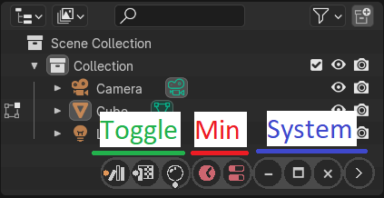

Zen Dock for Blender 1.1.1
Zen Dock adds classical window control bar with toggle, minimize, maximize, close buttons, etc. for every area in Blender application.
|  |
|---|
Toggle Buttons
Allows to quickly toggle areas in viewport or open them in separate windows
Minimize Buttons
Restores minimized areas in viewport and restore its space settings such as tools, n-panel visibility etc.
System Buttons
Controls areas visibility
- Minimize
- Maximize
- Close
- Expand-Collapse Bar
Enjoy this experience with us!
 Gumroad |
Gumroad |  BlenderMarket |
BlenderMarket |  Discord
Discord